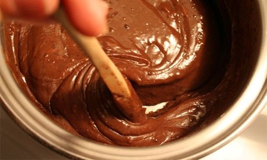

INGREDIENTES
MODO DE PREPARO
1 Leve ao fogo médio uma panela com o leite e o cacau. Com uma colher, misture bem até dissolver.
2 Em seguida, junte o leite condensado e a manteiga. Misture até desgrudar do fundo da panela, mexendo sempre. Desligue e transfira para uma tigela ou prato. Cuidado para não queimar a língua, hein?
3 Se quiser um brigadeiro no ponto de enrolar, é só cozinhar um pouco mais.
4 pronto
